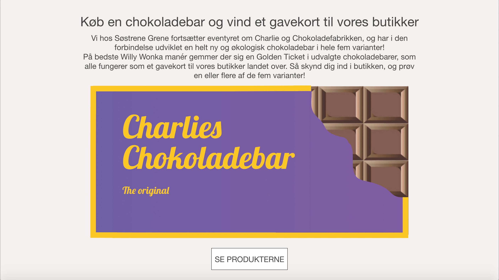
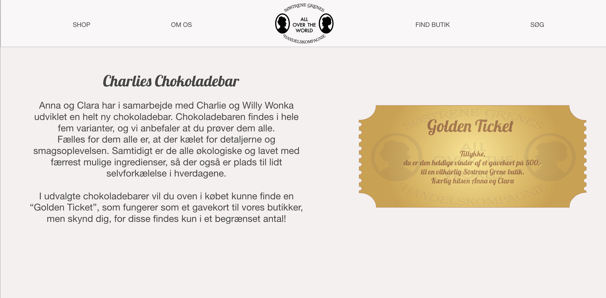
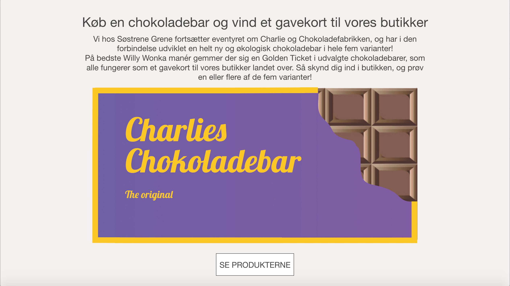
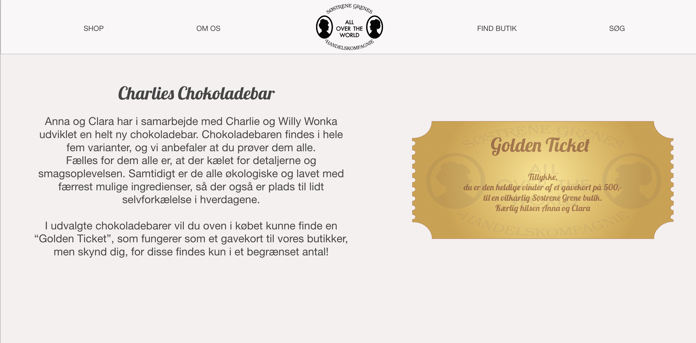

Søstrene Grene
 



Til eksamensprojektet på 1. semester fik fik til opgave at skabe en kampagneside til et valgfrit produkt hos Søstrene Grene.
Her valgte jeg at designe en chokoladebar, hvor der var stor fokus på Storytelling. Chokoladebaren var inspireret af eventyret om Charlie og chokoladefabrikken, og en del af kampagnen handlede om, at man kunne finde en Golden Ticket i nogle af chokoladebarerne, som fungerede som et gavekort til Søstrene Grenes butikker.
Klient: Søstrene Grene
Dato: juni 2020